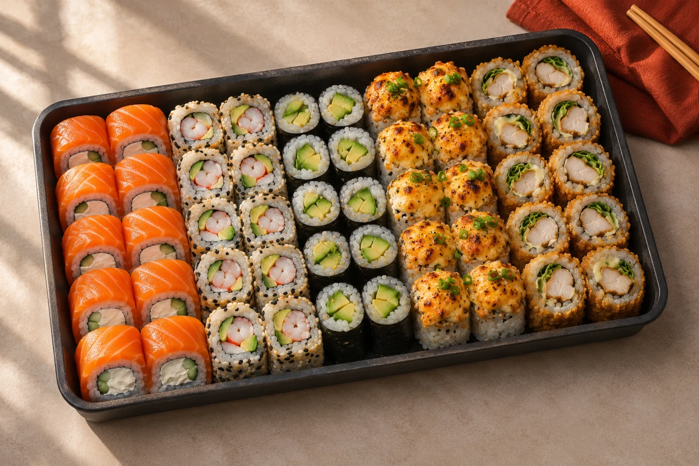

Суші й сети в Києві
Суші до
спільного столу.
На двох, на друзів чи на себе. Підберіть роли за кількістю людей і дістаньте точну суму та орієнтир на кожного.
Усе меню
Суші й сети в Києві
На двох, на друзів чи на себе. Підберіть роли за кількістю людей і дістаньте точну суму та орієнтир на кожного.
Усе меню